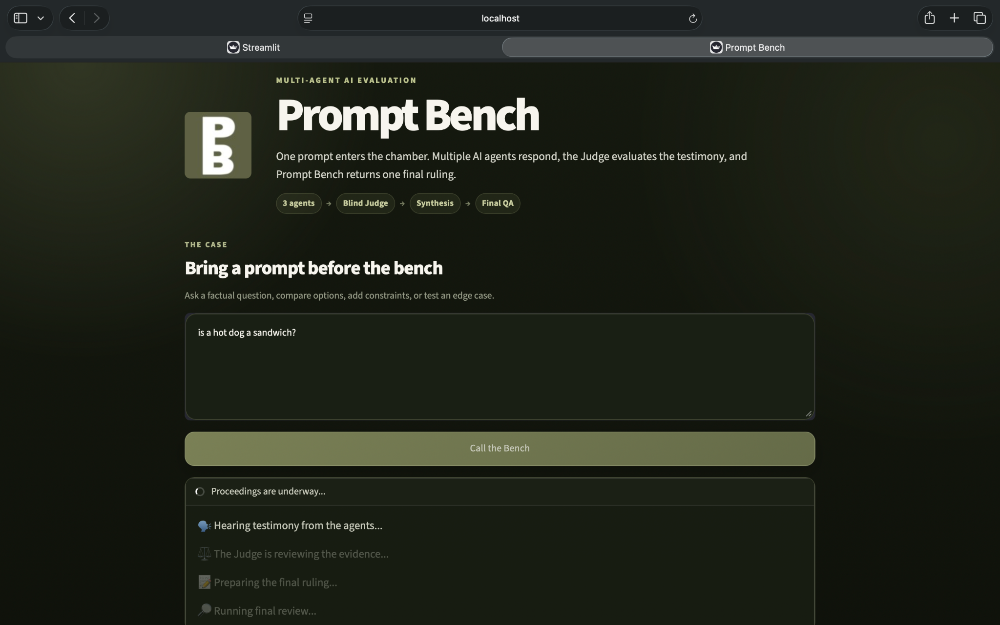
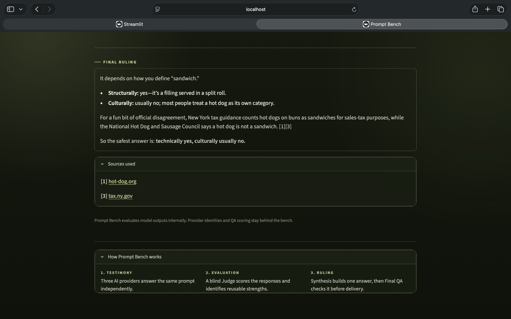

Generate
OpenAI, Claude, and Gemini answer the same prompt.
Working prototype
One prompt. Three AI models. One blind evaluation pipeline.
Workflow
OpenAI, Claude, and Gemini answer the same prompt.
A blind evaluator scores response quality.
The strongest contributions become one answer.
Final QA checks the result before delivery.

Result
The evaluation stays behind the scenes. The user gets the final answer and sources.

Prototype status
Built in Python and Streamlit with OpenAI, Anthropic, and Gemini APIs. Current work is focused on testing, analytics, and deployment.